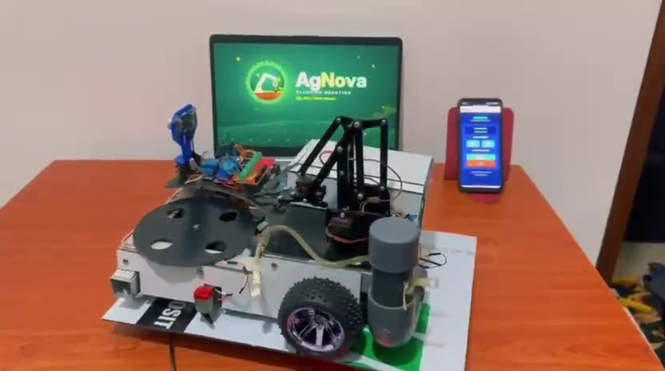

AgNova
වළ කපයි. පැළ සිටුවයි. ජලය දමයි. නැවතත්.Dig. Plant. Water. Repeat.
ඔබ තෝරන පරතරයට වළ කපා, පැළ සිටුවා, සෑම පැළයකටම ජලය ලබාදෙන ස්වයංක්රීය රොබෝවරයෙක්.A self-driving robot that digs, plants young seedlings at the spacing you choose and waters every one.
ගැටලුවThe problem
අතින් පැළ සිටුවීම ඉතා වෙහෙසකර කාර්යයකි.Planting by hand is back-breaking work.
සෑම පැළයක් සඳහාම…For every single seedling…
- 1දණගසා වළක් කැපීමKneel down and dig a hole
- 2පැළය සිටුවීමSet the plant in place
- 3ජලය ගෙනවිත් දැමීමFetch water and pour it
පැය ගණන් නැමී වැඩ කිරීමHours bent over
සෑම පැළයක් සඳහාම දණගසා, වළ කපා, සිටුවා, නැවත ජලය ගෙන ඒමට සිදුවෙයි.Every seedling means kneeling, digging, planting and coming back with water.
අසමාන පරතරයUneven spacing
එකිනෙකට ළඟින් සිටුවූ පැළ හිරු එළිය, ජලය සහ පෝෂක සඳහා තරඟ කරයි.Plants set too close fight each other for sun, water and nutrients.
ජලය නොලැබෙන පැළThirsty transplants
සිටුවූ වහාම ජලය නොලැබෙන අලුත් පැළ බොහෝ විට මැරී යයි.Fresh seedlings that miss their first watering often don’t survive.
ක්රියා කරන ආකාරයHow it works
පියවර හතරක්, නැවත නැවතත්.Four moves, on repeat.
AgNova මාර්ගය පරීක්ෂා කර, වළක් කපා, පැළයක් සිටුවා ජලය දමයි. ඉන්පසු ඔබ සැකසූ දුර හරියටම ඉදිරියට ගොස් නැවත එම ක්රියාවලියම කරයි.AgNova checks the path, digs a hole, plants a seedling and waters it, then rolls exactly the distance you set and does it all over again.
හඳුනාගැනීමDetect
අල්ට්රාසොනික් සංවේදකය මාර්ගයේ ඇති ගල්, වල් පැළ සහ වෙනත් බාධක පරීක්ෂා කරයි.The ultrasonic sensor checks the path for rocks, weeds and other obstacles.
වළ කැපීමDig
වෙනම ඇති කැපීමේ මෝටරය පහළට පැමිණ පැළය සඳහා වළක් කපයි.A dedicated digging motor swings down and digs a hole for the plant.
පැළ සිටුවීමPlant
පැළ තැටිය කැරකී, රොබෝ අත පැළයක් ගෙන වළ තුළ තබයි.The seedling disc turns and the robot arm sets a seedling in the hole.
ජලය දැමීමWater
සෑම අලුත් පැළයකටම ජලය මිලි ලීටර 25ක් ලැබෙයි.Each new plant gets 25 ml of water.
පැළ අවසන් වූ විට අනතුරු ඇඟවීමක්An alarm when the plants run out
තැටියේ පැළ අවසන් වූ විට AgNova ශබ්ද සංඥාවක් නිකුත් කරයි. එවිට තැටිය නැවත පුරවා වැඩ දිගටම කරගෙන යා හැකියි.When the tray runs out of seedlings, AgNova sounds an alarm so you can refill it and carry on.
වීඩියෝWatch
AgNova ක්රියාත්මක වන අයුරු බලන්න.See AgNova in action.
බාධක හඳුනාගැනීමObstacle detection
බාධකයක්ද? එය වටේට යයි.Obstacle? It goes around.
සර්වෝ මෝටරයක් මත ඇති අල්ට්රාසොනික් සංවේදකය ඉදිරිය පරීක්ෂා කරයි. මාර්ගයේ යමක් ඇත්නම් AgNova එය වටේට ගොස් නැවත පේළියට පැමිණෙයි.An ultrasonic sensor on a servo scans the path ahead. If something is in the way, AgNova detours, then finds its way back to the line.
- 1
සංවේදනය — අල්ට්රාසොනික් සංඥාවකින් සෙන්ටිමීටර 10ක් ඇතුළත ඇති වස්තු හඳුනාගනී.Sense — an ultrasonic ping spots objects within 10 cm.
- 2
මඟහැරීම — බාධකය වටේට ගමන් කරයි.Detour — it moves around the obstacle.
- 3
මැනීම — මාර්ගයෙන් කොපමණ දුරක් ඉවතට ගියාද යන්න මනියි.Track — it measures how far it went off path.
- 4
නැවත එක්වීම — නැවත පේළියට පැමිණ පරතරය ගණන් කිරීම දිගටම කරගෙන යයි.Rejoin — it returns to the line and keeps counting the spacing.
රොබෝ අතThe robotic arm
මෝටර දෙකක්. එකකට එක කාර්යයක්.Two motors. One job each.
වෙනම ඇති කැපීමේ මෝටරය වළ කපයි. රොබෝ අත ක්රියා කරන්නේ තනි පාදක මෝටරයකින් — එය පැළය තැටියේ සිට වළට ගෙන යයි.A dedicated digging motor makes the hole. The arm runs on a single base motor that swings the seedling from the tray into place.

අල්ට්රාසොනික් සංවේදකයUltrasonic sensor
ඉදිරිපස සර්වෝ මෝටරයක් මත පිහිටා බාධක පරීක්ෂා කරයි.Sits on a servo at the front and scans for obstacles.
පැළ තැටියSeedling tray
සිදුරු 3ක් සහිත කැරකෙන තැටියක්; පැළ එකින් එක රොබෝ අත වෙත ගෙන එයි.A rotating disc with 3 holes that brings each seedling to the arm.
රොබෝ අතRobotic arm
සෑම පැළයක්ම ගෙන වළ තුළ තබයි.Picks each seedling and places it in the hole.
කැපීමේ මෝටරයDigging motor
තලයක් සහිත DC මෝටරයක්; තමන්ගේම සර්වෝ මෝටරයකින් පහළට පැමිණ වළ කපයි.A DC motor with a blade, lowered by its own servo, digs the hole.
ජල ටැංකිය සහ තුණ්ඩයWater tank & nozzle
මිලි ලීටර 200ක PVC ටැංකියකින් පැහැදිලි නළයක් හරහා පැළය අසල තුණ්ඩයට ජලය යයි.A 200 ml PVC tank feeds a clear tube to a nozzle beside the plant.
ධාවන රෝදDrive wheels
රෝද එන්කෝඩර සෑම චලනයක්ම මනින නිසා පරතරය නිවැරදියි.Wheel encoders measure every move to keep spacing exact.
Arduino Uno සහ MPU6050Arduino Uno & MPU6050
Arduino සියලු සංවේදක සහ මෝටර පාලනය කරයි; MPU6050 දිශාව නිවැරදිව තබා ගැනීමට උදව් වෙයි.The Arduino runs every sensor and motor; the MPU6050 helps it keep its heading.
අනතුරු ඇඟවීමේ ශබ්දයAlarm buzzer
තැටියේ පැළ අවසන් වූ විට ශබ්ද කරයි.Sounds when the tray runs out of plants.
නිවැරදි පරතරයPrecise spacing
පරතරය ඔබ තෝරන්න. එය කිසිදා වරදින්නේ නැහැ.You pick the gap. It never misses.
එක් එක් බෝගයට ගැලපෙන පරතරය සකසන්න. රෝද එන්කෝඩර සෑම චලනයක්ම මනින නිසා, සෑම පැළයක්ම හරියටම එම දුරින් සිටුවෙයි.Set the distance between plants for each crop. Wheel encoders then measure every move, so each plant lands exactly that far apart.
ජලය ලබාදීමWatering
සෑම පැළයකටම ජලය.Every plant gets watered.
සිටුවූ වහාම, ටැංකියේ සිට නළය හරහා තුණ්ඩයෙන් සෑම පැළයකටම මනින ලද ජල ප්රමාණයක් ලැබෙන නිසා මුල් ඉක්මනින් පසට හුරු වෙයි.Right after planting, water flows from the tank through a clear tube to the nozzle, giving each seedling a measured splash so its roots settle in fast.
ප්රධාන විශේෂාංගKey features
හැකියාවන් හයක්. විවේකයක් නැහැ.Six skills. Zero coffee breaks.
වස්තු හඳුනාගැනීමObject detection
මාර්ගයේ ඇති ගල් සහ බාධක හඳුනාගෙන ඒවා මඟහරියි.Spots rocks and obstacles in the path and goes around them.
ස්වයංක්රීය වළ කැපීමAuto digging
සෑම පැළයක් සඳහාම පිරිසිදු වළක් කපයි.Digs a clean hole for every seedling.
කැරකෙන පැළ තැටියRotating seedling tray
සිදුරු 3ක තැටියෙන් පැළ එකින් එක රොබෝ අතට ලබාදෙයි.A 3-hole disc hands seedlings to the arm one by one.
අභිරුචි පරතරයCustom spacing
එක් එක් බෝගයට ගැලපෙන ස්ථාවර පරතරයක් සකසන්න.Set a consistent gap for each crop.
ජල සැපයුමWatering system
සෑම පැළයකටම ජලය මිලි ලීටර 25ක් ලබාදෙයි.Adds 25 ml of water for each plant.
පැළ අවසන් වූ විට අනතුරු ඇඟවීමOut-of-plants alarm
තැටිය හිස් වූ විට ශබ්ද සංඥාවක් දෙයි.Sounds an alarm when the tray is empty.